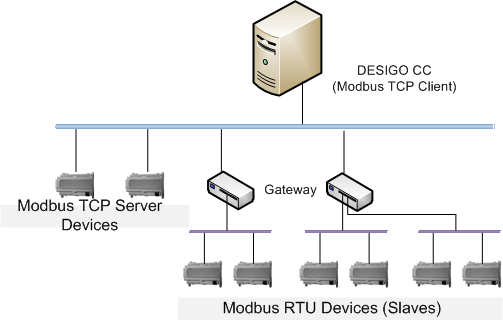
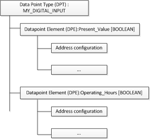
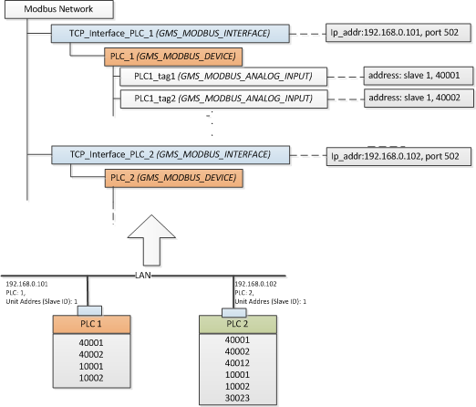
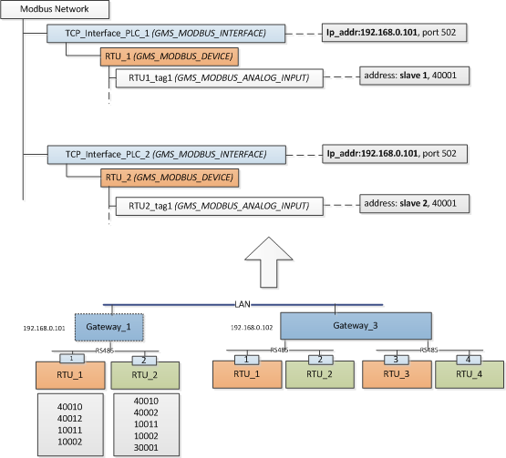
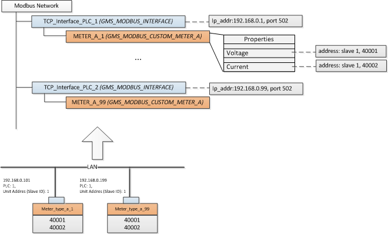
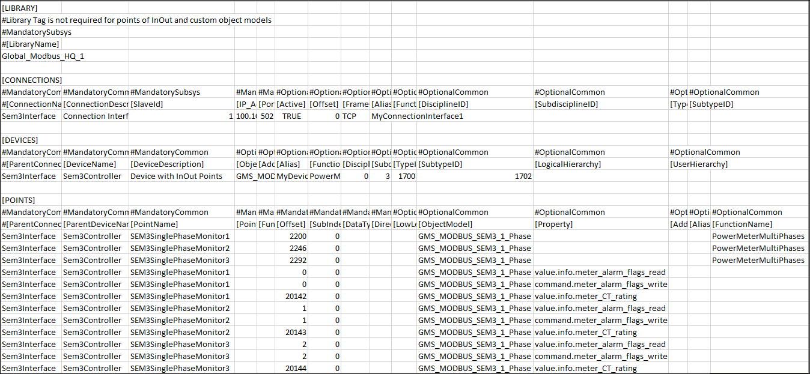

Overview
Modbus is a request-response oriented field device communication protocol which is widely used in the process and building automation segment. The request for data is sent by a master device, which is responded by a slave device addressed in the request.
The management station supports the integration of Modbus TCP server devices. Here, the management station acts as the client and communicates with the Modbus server devices. The integration is enabled by the software component called the Modbus extension. This extension contains software components and documentation (including this document) to help engineer and commission the integration.
Modbus TCP
The Modbus protocol was based on the RS485 communication network where a single master device could communicate with up to 254 slave devices. The data encoding in Modbus has two variants – MODBUS RTU and MODBUS ASCII. The protocol specification was extended to support communication on TCP networks by encapsulating the classic Modbus messages inside a TCP frame. This extension is known as Modbus TCP. In Modbus TCP, the network can have multiple client nodes as the requests and responses are directly based on the IP address.

In order to support integration of older RS485-based Modbus devices into TCP networks, several commercial gateways are available.
For more information regarding the Modbus communication standard, refer www.modbus.org.
Structure of the Data in the Management Platform
Data, in specific field device related data, is structured in an object-oriented manner. In order to define the structure of such a data object, we first need to define the data object type. Data object type definition consists of a type name (like Analog_Input) which represents a collection of data elements (like Present_Value). A data element is of a specific type like integer, float, double, boolean, string, and so on.
Standard Terminology
The data object type is called a data point type. An element within this type is termed as a property. (This is also called data point element or DPE). Additionally, the property must be specified with a corresponding address on the field device. This is called the address configuration of the property. Finally, a data object which is an instance of the data point is called a data point instance (DPI).
For example, you want a data point to represent a digital output of a field device, which logically contains two pieces of information; one which indicates the output value and another which indicates the number of hours the output was on. In this case, you can define a data type called MY_DIGITAL_OUTPUT which contains the following two properties: Present_Value and Operating_Hours.

Once the data point has been defined, you can create the data point instance. An instance is a concrete data object which is capable of representing the data obtained from the field device. The data point instance is created using a software tool called the Importer. The Importer also sets the address configuration of the data point element. The communication driver then handles the task of keeping the data point elements updated or handling of data written by the user to the data point elements.
Modbus Network and its Representation
Modbus TCP devices are nodes on the network, which, like any other node, have a unique IP address assigned. These devices listen on a UDP port (default is 502) for requests coming from a client device. Each device also has an identifier called the Slave ID that is carried over from the classical Modbus standard where the Slave Id uniquely identifies a device on the RS485 network. However, in case of a Modbus TCP network, the Slave ID is redundant (more than one device in the network can have the same Id). The requests are unicast UDP messages, which contain the IP address and the redundant Slave ID. Therefore, the server device receiving the request responds with a unicast message directed back to the Modbus client.
Each Modbus TCP device is represented by a unique combination of two objects; the TCP interface and the device. This may look counter-intuitive since, physically, the device and its communication interface as one entity. However, the logical separation of the communication interface and the device enables modeling of Modbus devices, which are integrated using a gateway device. In this case, each Modbus device does not have a physical TCP interface. The Modbus client sends the request to the IP address of the gateway, along with the slave address of the Modbus RS485 device. The gateway then uses classical Modbus protocol to query the slave device, obtain the response, and forward it as Modbus TCP response back to the Modbus client.
Each Modbus device contains a collection of registers, which you can integrate as data point objects in the management station. The way that you want to model the register as data points will result in one of the workflows described in the following sections. In the simplest form, each register can be modeled as an individual data point object. Alternatively, a device, along with a set of registers in it, can be modeled as custom defined data point where each property represents a particular register or a data point. In both cases, data points are modeled as child elements of the device object. The device object is modeled as a child element of its unique communication interface object. The following figures attempt to explain this philosophy.
Integration of Modbus TCP devices using standard DPT to represent each register or data point |  |
Integration of Modbus devices using a TCP gateway The text in brackets indicates the data point name and the text in the grey box indicates the key configuration parameters stored in that data point instance. |  |
Integration of Modbus devices using a custom defined data point This is typically used in integrated devices like electrical meters where the device represents a coherent functional unit. This incurs additional engineering work to define the data point, object model, and Import Rules, but results in encapsulated data point objects. |  |
Modbus SEM3 Devices
The Siemens Embedded Micro Metering Module (SEM3) is a modular metering solution for energy monitoring, data analysis, and sub billing applications. It is designed to measure the current, voltage, and energy consumption of upto 45 circuits.
The SEM3 system contains the following components:
- Controller
- Meter modules
- Meter racks
- Current transformers (CT)
- Communication cables
The support for SEM3 device integration has been added to the Modbus extension module.
In order to integrate the SEM3 devices, you must ensure that the following four object models are present in the Modbus library along with their respective address configurations.
Object Model Name | Description |
GMS_MODBUS_SEM3_1_Phase | Object model for Phase 1 Metering Module |
GMS_MODBUS_SEM3_2_Phase | Object model for Phase 2 Metering Module |
GMS_MODBUS_SEM3_3_Phase | Object model for Phase 3 Metering Module |
GMS_MODBUS_SEM3_Controller | Object model for SEM3 Controller |
Additionally, you must also specify all the relevant details in a CSV file. The file has to be carefully configured to ensure that the SEM3 devices are integrated with the management platform and each embedded micro metering module displays below the SEM3 controller in the System Browser. (See Integrating SEM3 devices with the Management Platform from the Additional Modbus Procedures.)

Alarm Properties for each Embedded Micro Metering Module (EMMMs)
EMMM Object Model Name | Property Name |
GMS_MODBUS_SEM3_1_Phase | value.info.meter_alarm_flags_read |
GMS_MODBUS_SEM3_2_Phase | value.info.meter_alarm_flags_read |
GMS_MODBUS_SEM3_3_Phase | value.info.meter_alarm_flags_read |
|
|
Following is the list of alarm types as per the EMMM type.
SEM3 Controller | SEM3 Phase1 Meters | SEM3 Phase2 Meters | SEM3 Phase3 Meters |
state.under_voltage_alarm | Phase1_Loss | Phase1_Loss | Phase1_ Loss |
state.over_voltage_alarm | Phase1_Over_Current_Pre_ | Phase1_Over_Current_ | Phase1_Over_Current |
| Phase1_Over_Current_Alarm | Phase1 Over Current Alarm | Phase1_Over_Current_Alarm |
| Monitor_Over_KW_ | Phase2_Loss | Phase2_Loss |
|
| Phase2_Over_Current_ | Phase2_Over_Current |
|
| Phase2_Over_Current_ | Phase2_Over_Current_Alarm |
|
| Monitor_Over_KW_ | Phase3_Loss |
|
|
| Phase3_Over_Current |
|
|
| Phase3_Over_Current_Alarm |
|
|
| Monitor_Over_KW_ |